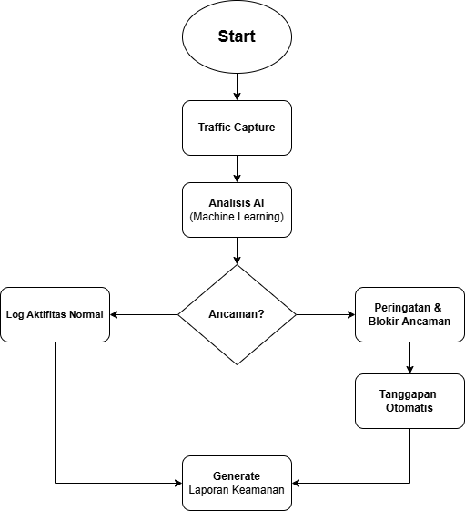
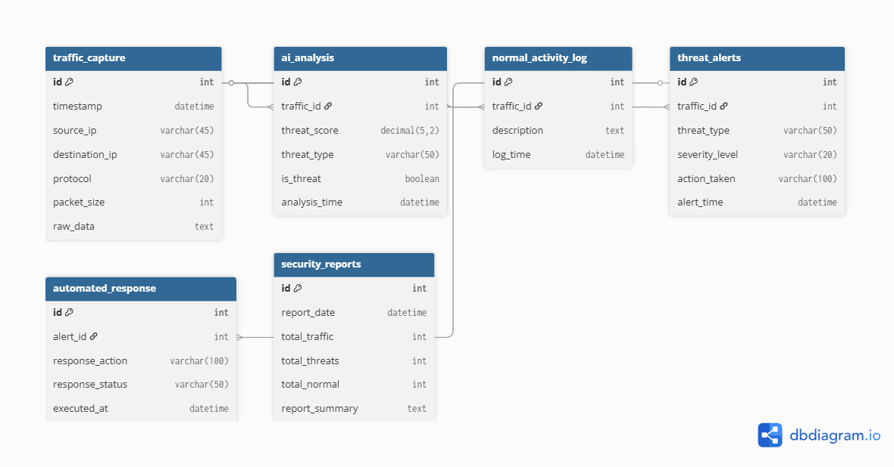

Penjelasan Aplikasi
SecureGuard AI adalah platform monitoring keamanan jaringan generasi terbaru yang menggunakan teknologi kecerdasan buatan dan machine learning untuk mendeteksi, menganalisis, dan merespons ancaman siber secara real-time.
Aplikasi ini dirancang untuk melindungi infrastruktur IT perusahaan dengan memberikan visibilitas penuh terhadap aktivitas jaringan, mengidentifikasi pola-pola mencurigakan, dan memberikan alert sebelum serangan terjadi.
SecureGuard AI dapat menganalisis jutaan paket data per detik dan menggunakan algoritma pembelajaran mendalam untuk membedakan antara aktivitas normal dan anomali berbahaya, mengurangi false positive hingga 95%.
Keunggulan Aplikasi
- 🤖 Deteksi Ancaman Berbasis AI Menggunakan machine learning untuk mengidentifikasi pola serangan baru yang belum pernah terdeteksi sebelumnya (zero-day threats). Sistem terus belajar dan beradaptasi dengan ancaman yang terus berkembang, memberikan perlindungan proaktif 24/7.
- ⚡ Real-Time Monitoring & Response Pemantauan jaringan secara real-time dengan latency kurang dari 1 detik. Sistem dapat secara otomatis mengisolasi perangkat yang terinfeksi atau memblokir traffic berbahaya sebelum menyebar ke seluruh jaringan.
- 📊 Dashboard Analitik Komprehensif Interface yang intuitif menampilkan visualisasi data keamanan secara lengkap, termasuk threat map, network topology, dan historical analysis. Laporan dapat di-customize sesuai kebutuhan tim security dan management.
Flowchart Aplikasi

Entity Relationship Diagram (ERD)
